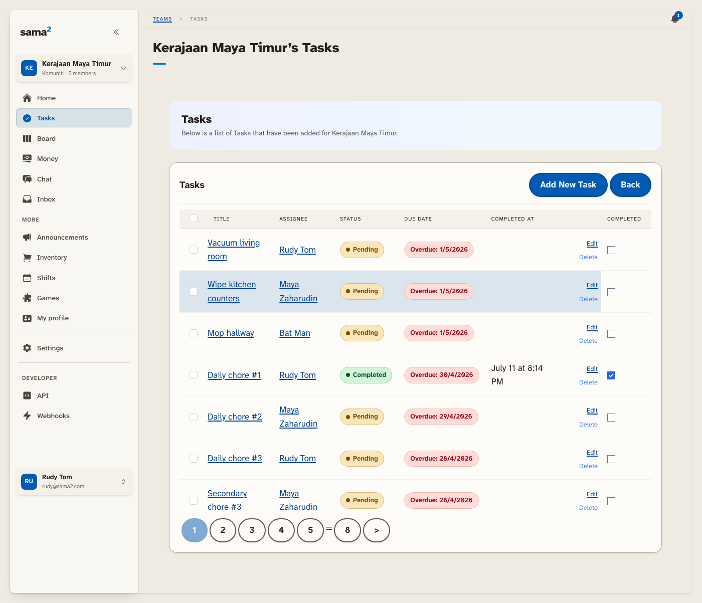
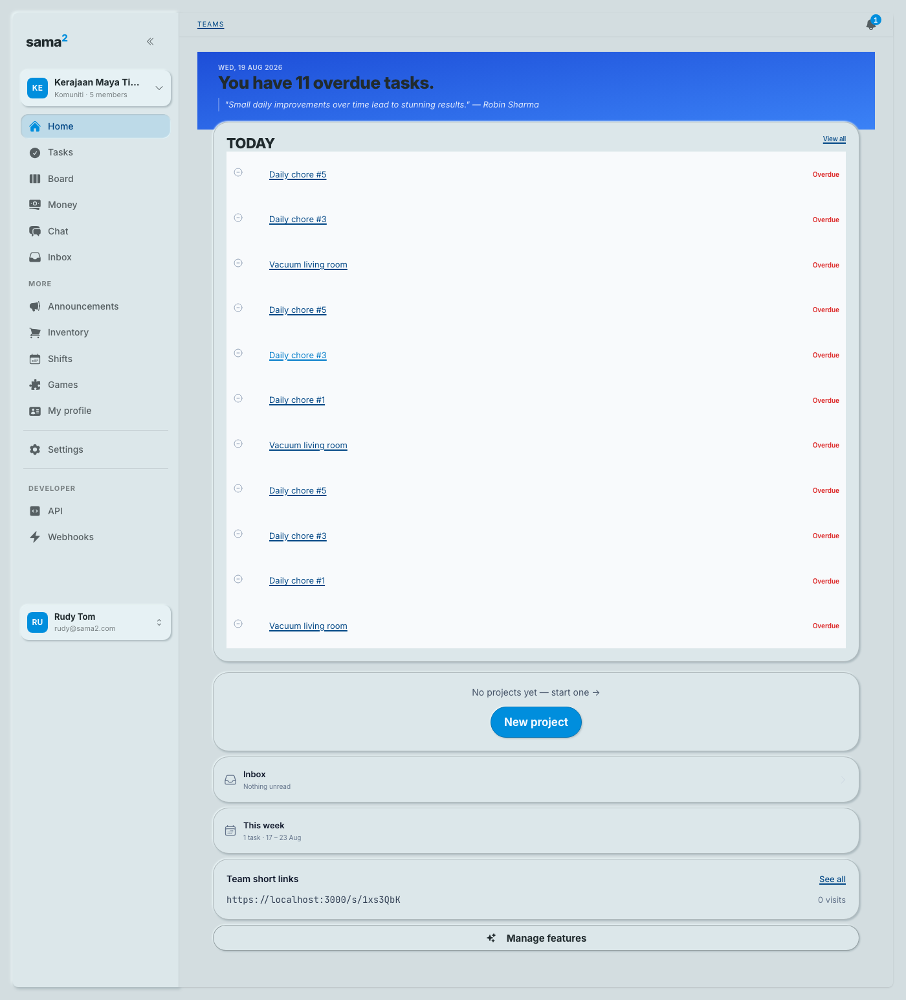
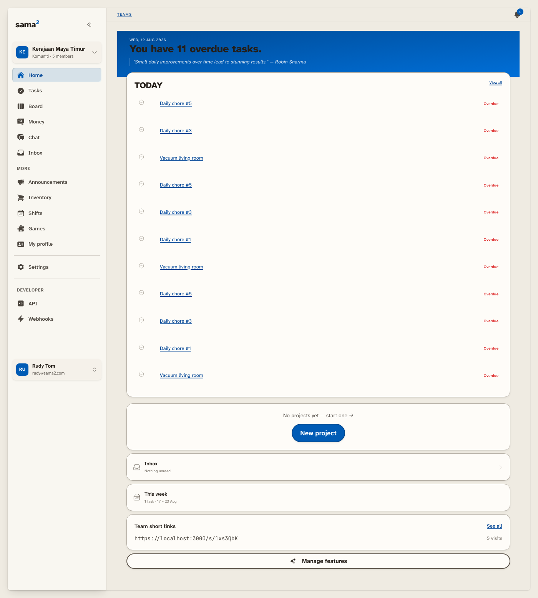
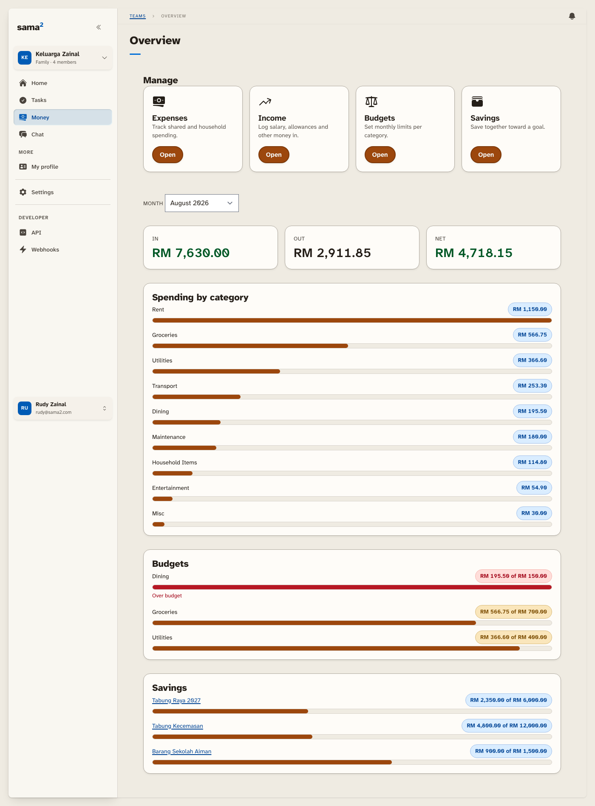
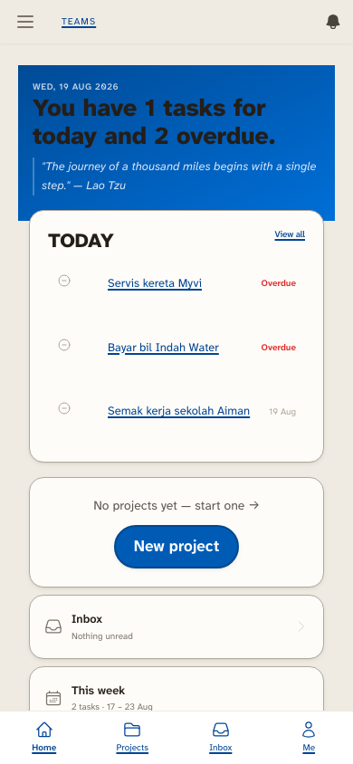
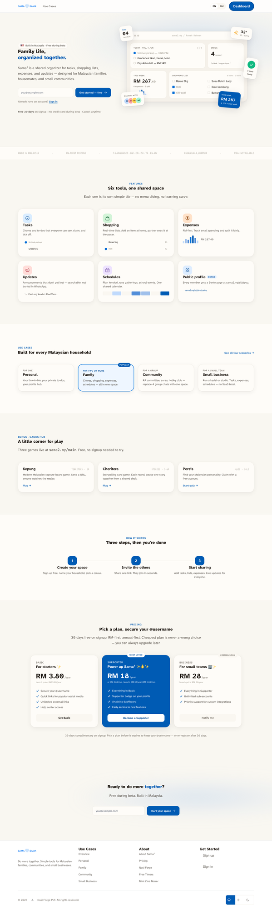
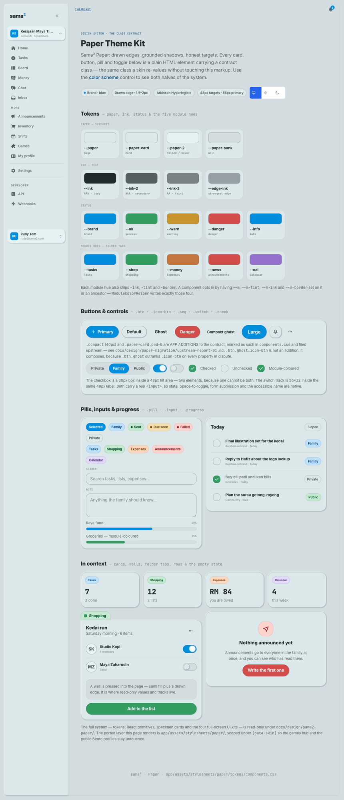
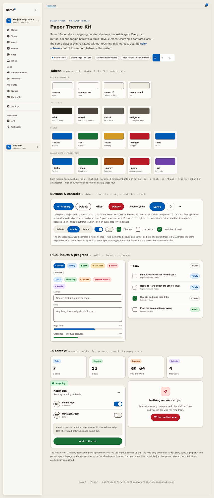
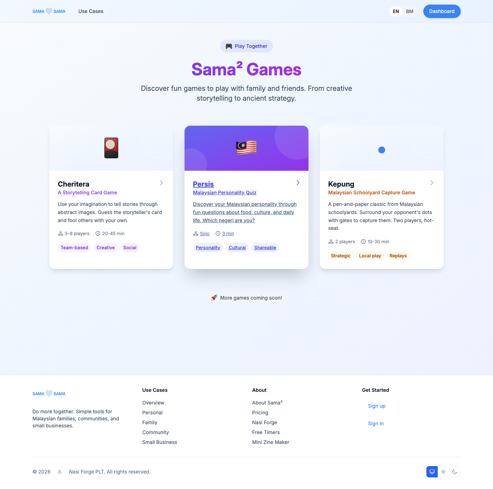
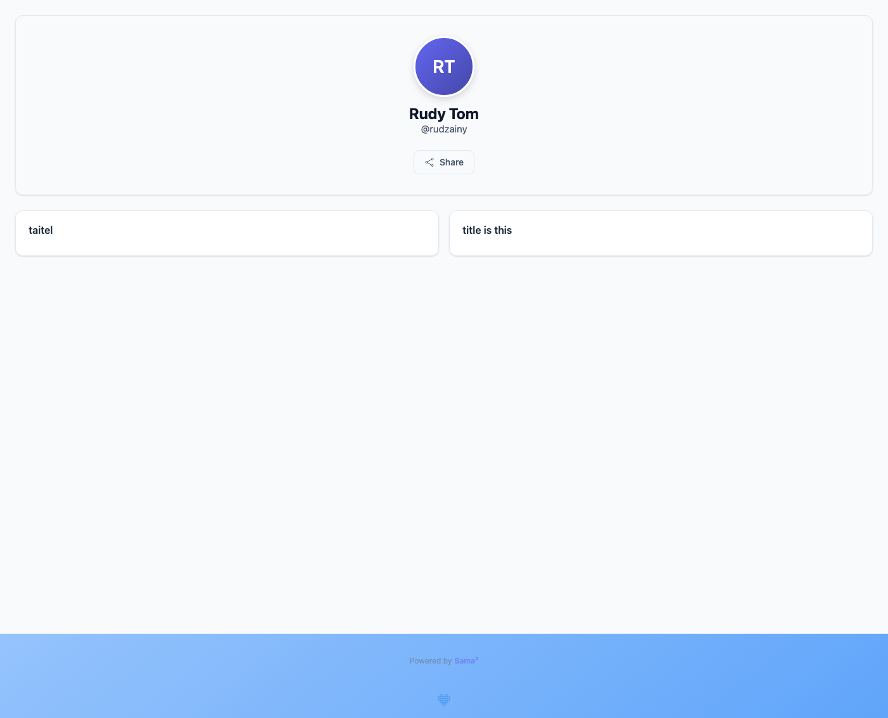

The part worth writing up is not a feature. In late June 2026 I planned a whole visual identity for the app, neumorphic, soft, pillowy, the kind of thing that looks lovely in a screenshot. Seven weeks later I deleted it and shipped a different design system in its place, called Sama² Paper. The reason was that neumorphism was actively bad for the people Sama² is for. The interesting part is what the reversal cost, which was not what I expected, and what it taught me about where a visual language actually lives.
49
Days the neumorphic design system lived, exactly seven weeks
3
Surfaces in the app, and only one of them got reskinned
625
Screens the visual language turned out to be scattered across
48px
The floor under every tappable target in the replacement
What Sama² Is, and Who It's For
Three surfaces, and they do not behave the same way.
The first is the logged-in app: the organiser proper, where a family keeps its tasks, its money, its bookings. This is the thing people sign in to on a Tuesday night. The second is a games hub. The third is the Bento profile, a public page you can put on your own domain, which is the one part of the design I have never once wanted to change.

Who it is for matters more than any of that, and it is the sentence every decision below hangs off. Sama² is built for people who are not digital natives. Low end of digital adoption. The parent who has one app they trust and did not choose it. The relative who taps something, nothing visibly happens, and quietly concludes they broke it. Not the user you design for when you are picking a design language off a mood board.
If you hold that audience in your head, a lot of aesthetic questions stop being questions. Can this person see the edge of the button? Can they tell the button apart from the card it sits on? Is the tap target big enough for a thumb that is not steady? Those are the only three questions that ever really mattered here, and it still took me two design systems to start answering them properly.
The First Year: A Frontend I Inherited
Sama² started in August 2025, and its frontend is older than the app.
I built on Bullet Train, which is a Rails framework that arrives with its interface already decided: the styling system, the page transitions, the component conventions, the shape of every scaffolded screen. Those calls were settled years before Sama² existed, by people I have never met. I made no greenfield frontend decisions at all. Everything I designed was a layer sitting on top of somebody else's, and that constraint is the honest starting condition for the whole case study.
So the first year has a rhythm to it: design something bespoke, live with it, then delete it in favour of what the framework already did. I built a bespoke mobile navigation in September 2025 and pulled it out that December, back to the default. I designed a six-step onboarding wizard and, in May 2026, replaced the whole thing with a single page. The wizard is the one I would have defended hardest, and it was still wrong: six screens and a row of progress dots, put in front of a parent who only wanted to add their family. One page, every field visible at once, and no sense of a journey you might fail halfway through.
The one visual idea that survives all of it is the Bento profile. It has gone through every later redesign untouched. I do not have a tidy theory for why that one held and the rest did not, beyond the obvious: it was the only piece I designed for a specific person looking at a specific page, rather than for the app as a system.
Neumorphism, and the Argument That Killed It
The neumorphic layer was the first whole-app identity I planned before building it. There was a proper plan document and a specialist review to go with it. Planned 27 June 2026, deleted 15 August 2026: 49 days, exactly seven weeks. (The idea itself had landed earlier, in April, so end to end the neumorphic look lived 110 days. The seven weeks is the formal programme.)
Here is the tell I should have read at the time. From the very beginning, the neumorphic implementation kept a hairline border on every surface. Pure neumorphism does not have borders. That is the whole point of it, shape emerges from shadow alone. I put borders on anyway, on day one, because without them nothing had enough contrast to be legible. I had already diagnosed the problem. I just filed it as a tweak instead of as a verdict.
The verdict got written down properly in the Paper design docs, blunter than I would have put it about my own work:
Pure neumorphism relies on low-contrast, blurred, same-color-on-same-color shadows and removes clear edges, which is directly hostile to low-vision and low-confidence users.
Directly hostile. To exactly the users Sama² exists for. Once that sentence is on the page there is nothing left to argue about.
Before · Neumorph

After · Paper

Paper, and Why the Reversal Was Cheap
Sama² Paper makes three choices, and all three fall straight out of who it's for.
Edges do the structural work. Where neumorphism asked a blurred shadow to imply where a card ends, Paper draws the line. If you need to know where the button is, the button has an outline. That is not a style preference, it is the correction.

The typeface is Atkinson Hyperlegible, drawn by the Braille Institute specifically so that characters which usually blur into each other stay distinguishable for low-vision readers. Sama² serves it from its own domain, and the reason is not aesthetic: the app has to keep working when the signal drops, and a font borrowed from somebody else's server is a font that disappears the moment the connection does. A legible typeface that only shows up on good coverage is not a legible typeface.
And every tappable target has a floor of 48px. Thumbs, not cursors.

The reason I could throw away seven weeks of work without it being a disaster is the way the design system is wired. A look in Sama² is a skin: a named set of tokens the app is told to wear, declared in one place rather than painted onto each screen. Dressing the entire logged-in app in Paper was one declaration, and putting neumorphism back would have been the same declaration with a different name. The public marketing pages, all four games, the Bento profiles and the sign-in screens are deliberately carved out and wear no skin at all.

There was one more lever like that. Nearly every list-and-detail screen in the app is drawn inside one shared frame, so restyling that single frame restyled about 69 screens at once, without opening any of them.


And now the honest part, which is the thing I actually want anyone reading this to take away. Swapping the named design system was roughly 10% of the work. It was the visible tip. The real visual language of the app was never gathered in one place at all: it was around 7,700 hard-coded colour decisions spread across 625 screens, made one screen at a time over a year, each of them perfectly reasonable on the day. That is what a design language looks like when it lives in the screens instead of in the tokens, and it is why "just change the theme" was a sentence I had no business saying out loud.
Where It Stands
It is not finished, and pretending otherwise would be the wrong ending.
The app genuinely has two looks right now. The games and the Bento profiles are still un-skinned, on purpose, but on purpose is not the same as resolved. Move between the organiser and a game and you can see the seam.


The typography has a gap I have not closed either. Sama² ships in five locales: English, Malay, Malaysian English, Chinese and Tamil. The Malay and English translations are close to complete, the Chinese and Tamil ones are barely started, and Atkinson Hyperlegible is Latin-only regardless. So a Chinese or Tamil reader falls back to whatever their device happens to have, and gets none of the character-disambiguation reasoning that made me pick the typeface in the first place. The argument that killed neumorphism does not yet reach every reader in the app.
And there is a smaller thing that I like, because it is the kind of conflict you only find by shipping. An older set of touch rules, written by me, pins tap targets at 44px. Paper's floor is 48px. Two rules, both mine, both defensible, quietly disagreeing about how big a button should be.
That last one is the whole project in miniature. You do not discover that a design system is hostile to your users by looking at it. You discover it by building it, shipping it, and then reading your own hairline borders back to yourself as evidence.